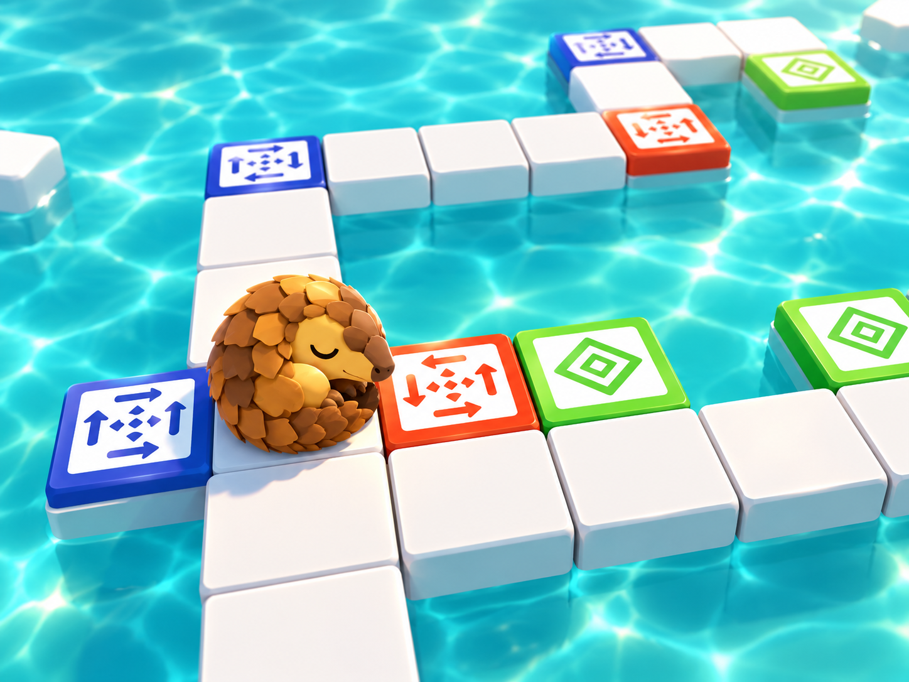
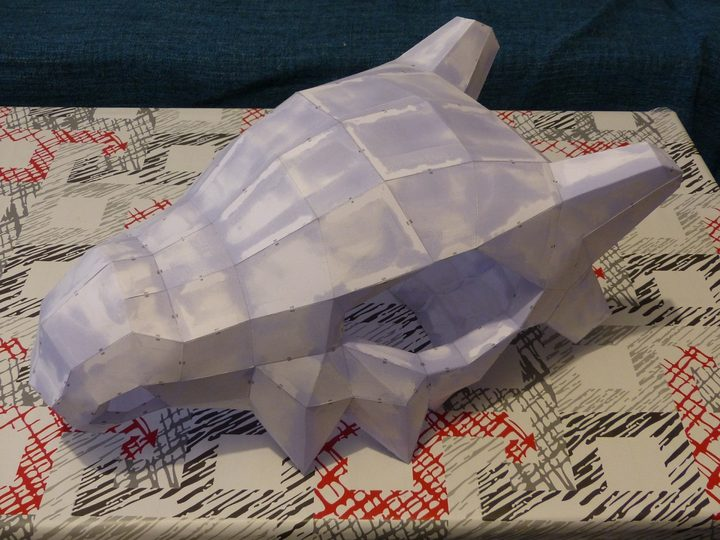
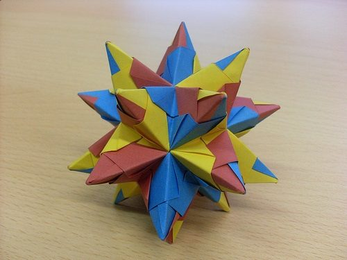
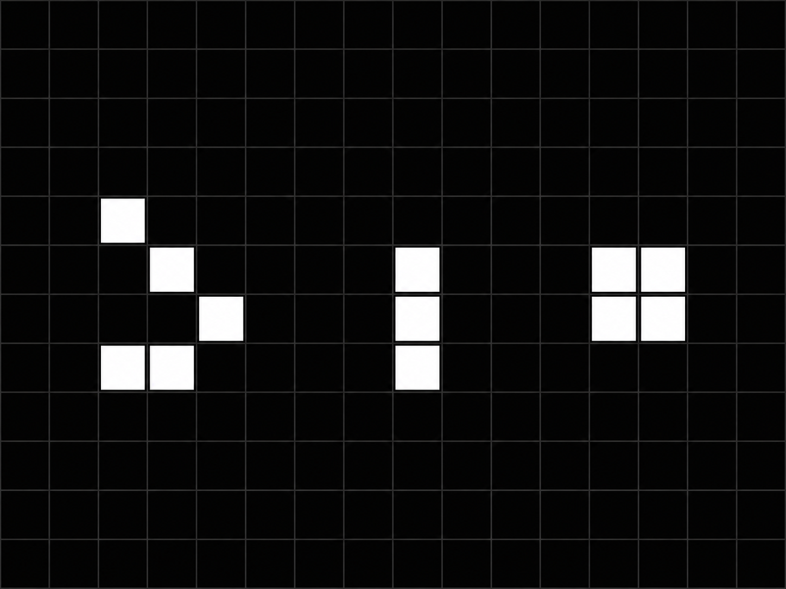
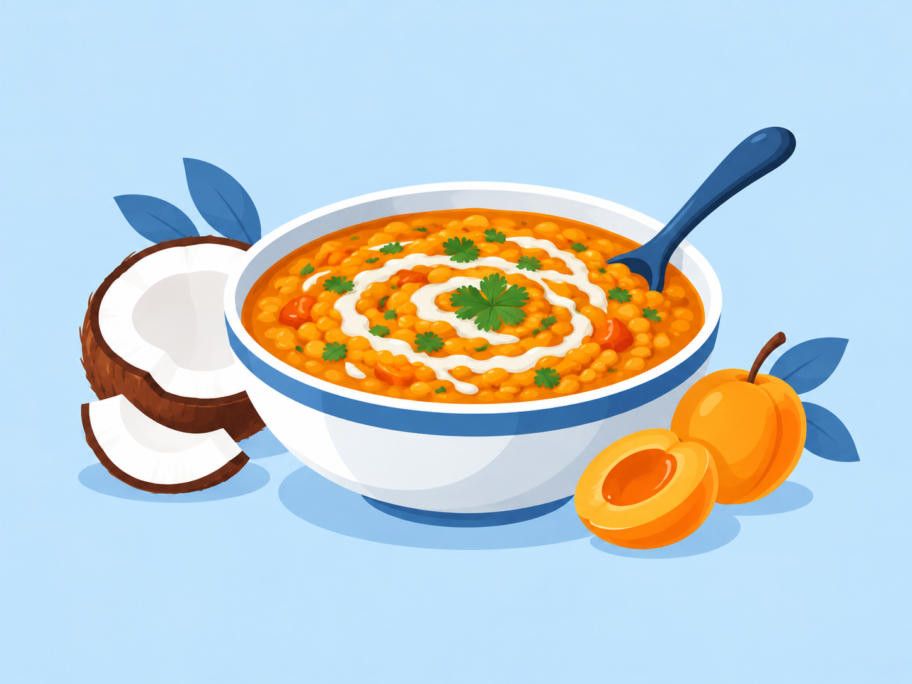
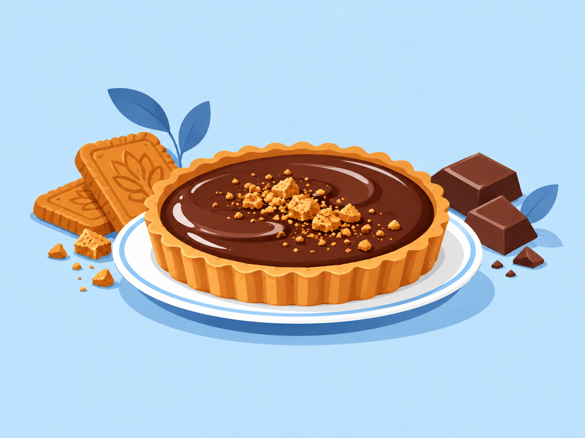
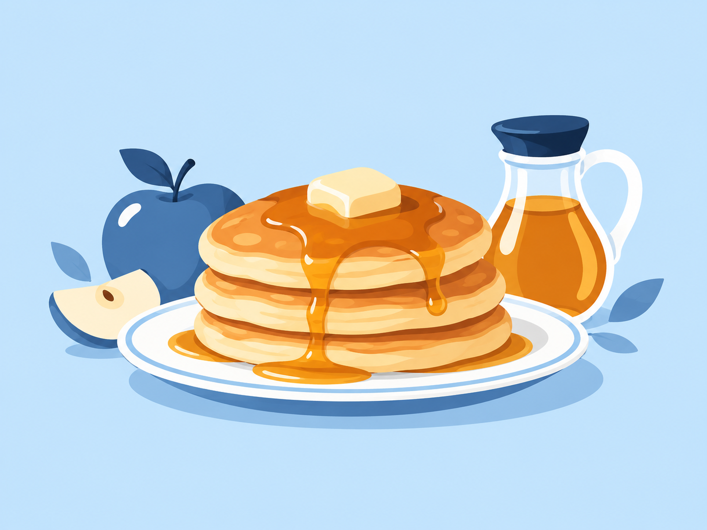

📚 Lecture & BD
Science-fiction, fantasy et bande dessinée, avec notamment Alain Damasio, Pierre Bottero, Alan Moore ou Denis Bajram.
SITE PERSONNEL
J’aime comprendre comment les choses fonctionnent, apprendre de nouvelles techniques et fabriquer moi-même, du code à l’impression 3D, en passant par l’origami, la cuisine et bricolage.
SOUTENIR MES PROJETS
Si ce que je fabrique ou partage ici t’intéresse, tu peux soutenir les prochains projets via Tipeee ou Patreon.
À PROPOS
J’ai suivi un parcours scientifique, porté par l’envie de comprendre le monde. Ma curiosité reste mon principal moteur : découvrir de nouvelles idées, acquérir des compétences, rencontrer des personnes différentes et tester de nouvelles façons de penser.
Ce site est né à l’origine comme un terrain d’apprentissage du web. Cette nouvelle version conserve les traces qui comptent : projets personnels, voyages, recettes et centres d’intérêt, dans un format plus simple.
PROJETS

Un jeu de puzzle créé à l'origine en 72 h pour la Ludum Dare 46 : place des tuiles pour guider un pangolin endormi jusqu'à l'arrivée.
Découvrir le projet →
Modèles imprimer sur papier avec Pepakura. Assemblés puis consolidés à la résine pour créer de grands objets objets plus durables. (une alternative à l’impressions 3D pour de grand modèele et plus léger)

Une exploration des polyèdres, notamment les dodécaèdres étoilés.

HTML, CSS, JavaScript, PHP, SQL, C++… et un ancien Game of Life qui fonctionne encore dans le navigateur.
Voir le projet →CUISINE

Lentilles corail, courge rôtie, coco et abricots secs.

Base croustillante au spéculoos et ganache chocolat.

Une recette très simple découverte pendant un voyage au Japon.
CENTRES D’INTÉRÊT
Science-fiction, fantasy et bande dessinée, avec notamment Alain Damasio, Pierre Bottero, Alan Moore ou Denis Bajram.
Des films comme 2001 : l’Odyssée de l’espace, Interstellar, Memento, Gladiator ou la saga Star Wars.
Sciences, mathématiques, cinéma, littérature et écologie : Internet reste pour moi un formidable outil de découverte et d’apprentissage.
CONTACT